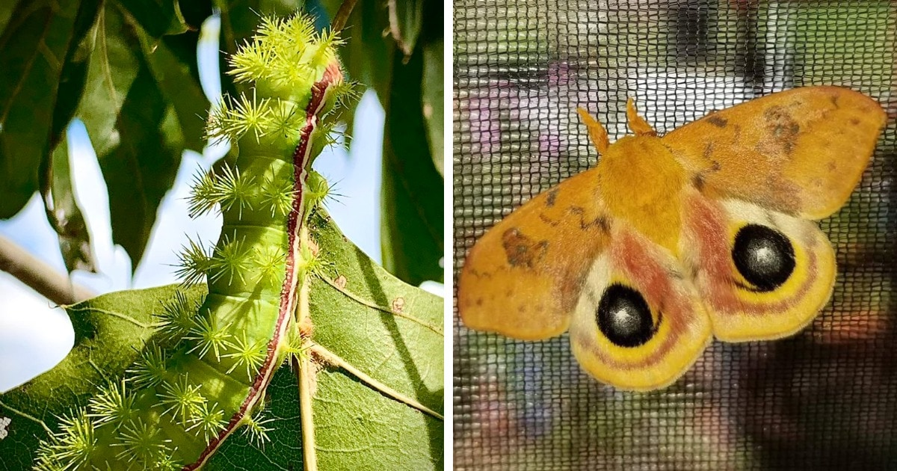
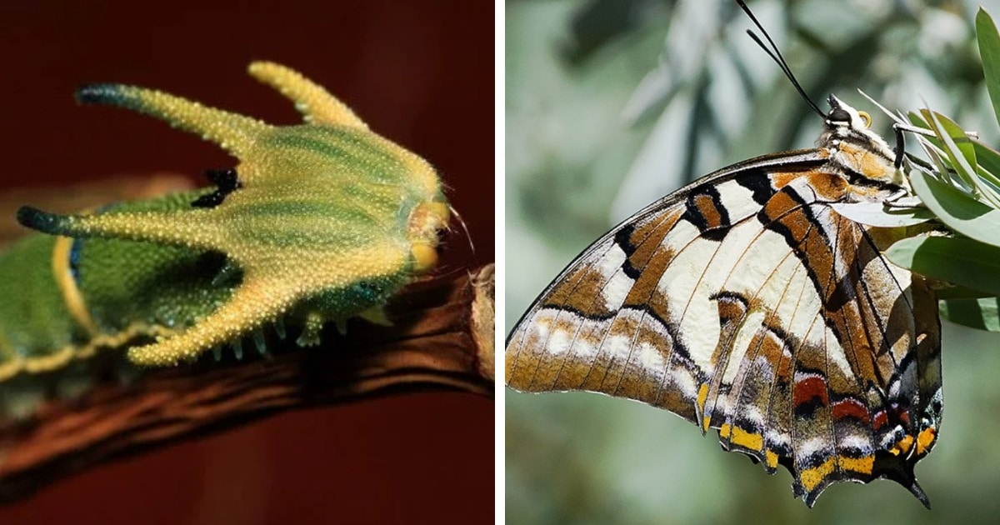
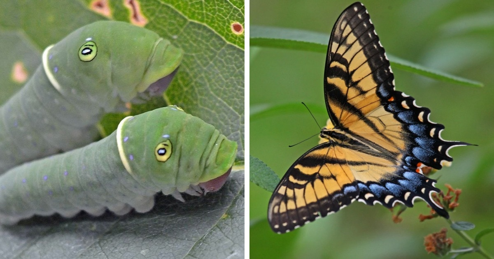
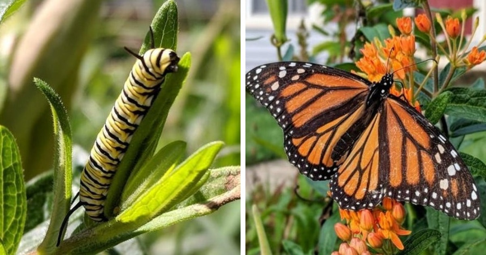

Una mariposa es un insecto que cuenta con cuatro alas, por lo general de tonalidades brillantes. Este animal forma parte de los lepidópteros: aquellas especies que, además de dos pares de alas con escamas, disponen de boca chupadora con trompa y desarrollan una metamorfosis completa.
En su fase juvenil, la mariposa es una larva u oruga. Luego se convierte en pupa y con el paso del tiempo va desarrollando las características que la definen en su adultez, como las alas y el aparato bucal con la trompa que le permite acceder al néctar que extrae de las flores.




> Gardey, A; Pérez, J. (2018). Definición de mariposa - Qué es, Significado y Concepto. Disponible en https://definicion.de/mariposa/. (Recuperado el 6 de Noviembre de 2022).
> Gardey, A; Pérez, J. (2018). Definición de polilla - Qué es, Significado y Concepto. Disponible en https://definicion.de/polilla/. (Recuperado el 6 de Noviembre de 2022).